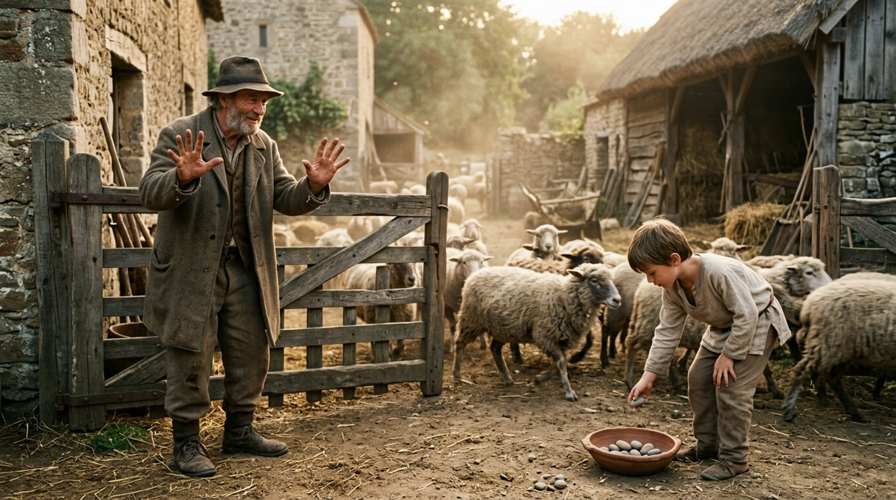
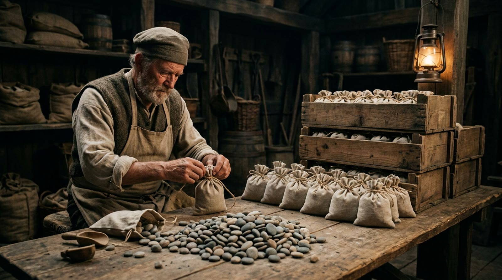
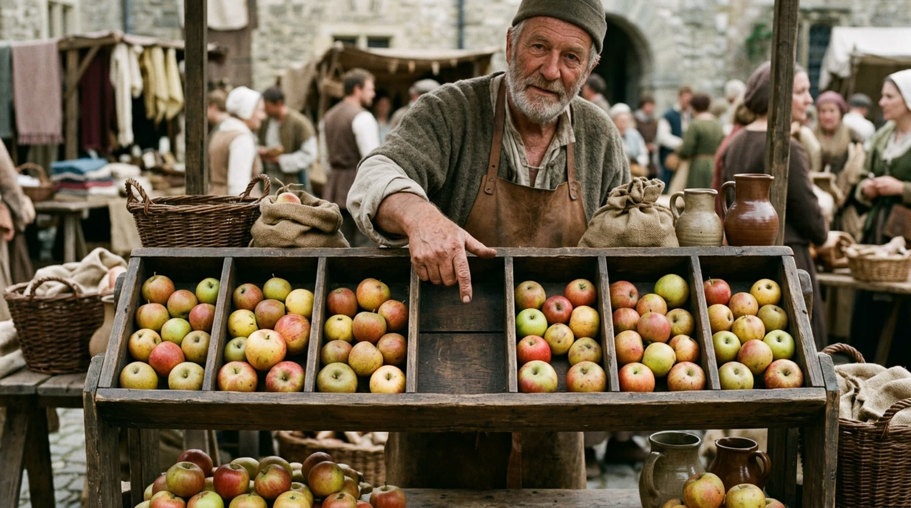

extra 03 · fora da linha do tempo
O Sistema Decimal
Você conta de dez em dez a vida inteira e nunca ninguém te perguntou por quê. Este extra mostra de onde o dez vem, o que o vai-um realmente faz e por que a posição do algarismo vale mais que o desenho dele. Avance apertando Próximo.
a pergunta · por que logo dez?
Porque a mão veio junto
reconstituição realista · não é fotografia de época
a regra · encheu a mão, sobe um
Dez vira um

essa troca — dez de uma coisa virando uma da coisa seguinte — é o sistema decimal inteiro; o resto é consequência
demonstração · a posição manda
A mesma pedra, outra casa
A pedrinha da tigela é isto aqui: uma conta que mudou de casa. Aperte ver como funciona.
no 347 escrito no papel acontece o mesmo: o 3 não vale três, vale trezentos, só por estar duas casas à esquerda
a escada · dez em dez em dez
Grupo de grupos

reconstituição realista · não é fotografia de época
demonstração · o vai-um trabalhando
Deixa contar
Aperte começar e deixe contar: repare no que acontece toda vez que uma casa enche.
0
cada haste tem nove contas: a décima não cabe, e é por não caber que ela sobe — o "vai um" da conta armada é isso acontecendo no papel
o detalhe que faltava · o lugar vazio
O zero guarda o lugar

reconstituição realista · não é fotografia de época
demonstração · 305 sem virar 35
Casa vazia é informação
Trezentos e cinco: a dezena fica vazia. Aperte ver por quê.
o algarismo 0 é o jeito de escrever "esta casa está vazia" — sem ele, 305 e 35 seriam o mesmo desenho
sua vez · três números
Monte você
Clique nas contas e represente o número.
0
o 90 deixa a unidade vazia e o 305 deixa a dezena vazia: repare que montar o vazio também é decisão
o fecho · onde o dez não manda
Dez é costume, não lei
o relógio
Conta de sessenta em sessenta: 60 segundos viram 1 minuto, 60 minutos viram 1 hora. Mesma regra do "encheu, sobe um" — só muda o tamanho do grupo.
a dúzia
Ovo, banana e parafuso se vendem de doze em doze há séculos: doze divide por 2, 3, 4 e 6 sem sobrar, coisa que o dez não faz.
o interruptor
E dá pra contar com um grupo de dois: só liga e desliga. Parece pouco, mas a mesma regra do sobe-um funciona inteira — e isso rende outra conversa.